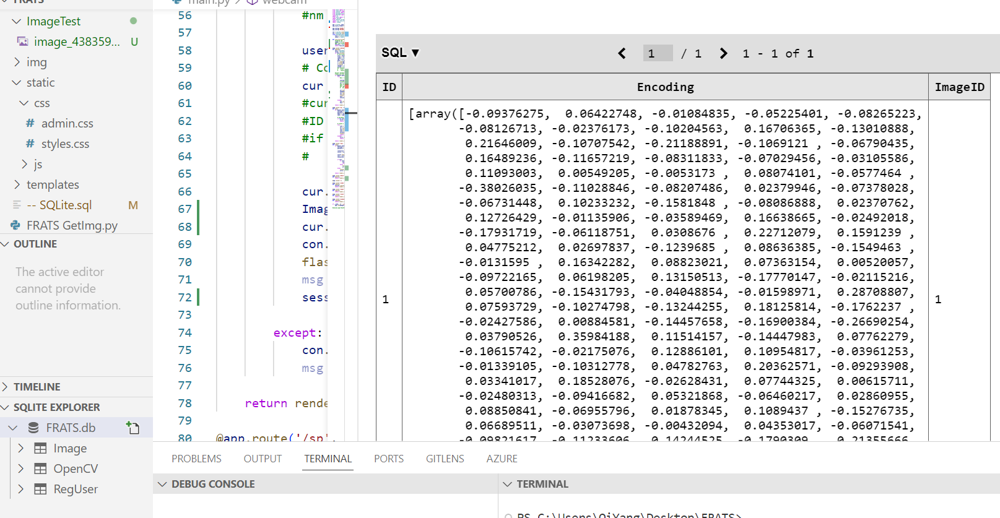
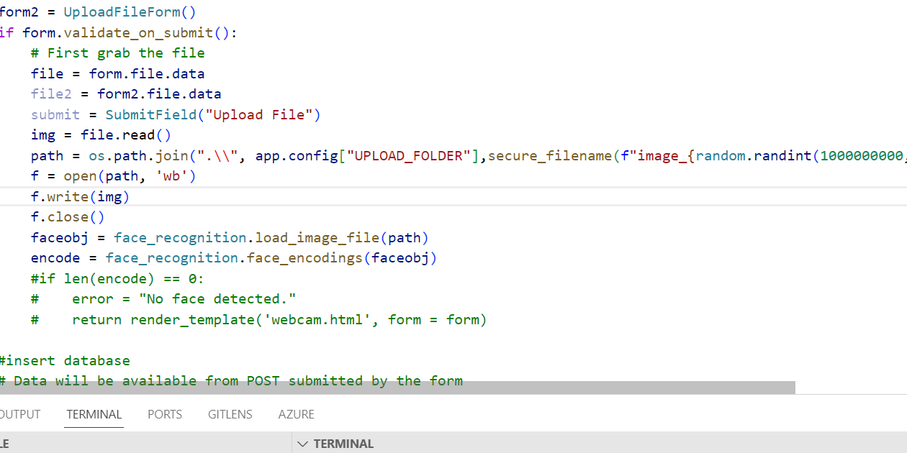

| week - 1 | week - 2 | week - 3 | week - 4 | week - 5 | week - 12 | week - 13 | week - 14 | week - 15 | week - 16 | |
During week 14 I have try to improve the code by adding 1 more database table
which to store OpenCV face encoding value inside the new database table. For the face encoding data
It store as a array with long list of numbers inside so I use txt for my database table to store this
array. But I have face a lot of problem for path and need more time to debug as they are a lot
bug and errors occur when I edit the code.

The good thing about this code is it can let opencv compared the the database encoding so it can
mkae our work much easier and faster during comparing.
So now I need to spend more time to debug the code as get the encoding path really give me a lot of
problem.
